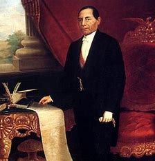

.jpg)
Nació en San Pablo Guelatao, Oaxaca. Hijo de padres indios zapotecas, se fue a Oaxaca a los trece años, cuando aún no hablaba castellano. Por poco tiempo fue cosechero de grana, pero encontró un protector en Don Antonio Salanueva, encuadernador y terciario de la Orden Franciscana. Con él y con el maestro Domingo González, aprendió a leer. Se matriculó en el Seminario de la Santa Cruz, donde estudió preparatoria; cursó latinidad, filosofía, y concluyó el bachillerato en 1827. Al año siguiente ingresó, sin la aprobación de su protector, al Instituto de Ciencias y Artes, donde se graduó de abogado en 1834, correspondiéndole ser el primer profesionista graduado en dicho Instituto.
En 1831 fue regidor del Ayuntamiento de Oaxaca y en 1833, fue diputado local. En 1841 fue juez de lo civil y al ser derrocado de la Presidencia el Gral. Paredes Arrillaga, Juárez resultó electo diputado federal. Al volver a Oaxaca, Juárez ocupó por poco tiempo la gubernatura a la renuncia de José Simeón Artega. Al terminar el periodo en agosto de 1848, se presentó candidato al siguiente periodo y resultó electo. Procuró el equilibrio económico y ejecutó algunas obras públicas: caminos, reconstrucción del Palacio de Gobierno, fundación de escuelas normales; levantamiento de una carta geográfica y la formación del plano de la ciudad de Oaxaca; reorganizó la Guardia Nacional y dejó superávit en el tesoro. Terminó su mandato en 1852.
Al volver Santa-Anna al poder, muchos liberales son desterrados, entre ellos Juárez, primero a Jalapa y luego a La Habana, tras una breve prisión en San Juan de Ulúa. De La Habana se le deportó a Nueva Orléans, donde desembarcó en octubre de 1853. Después, al caer Santa-Anna y llegar Juan Álvarez y Comonfort a la Presidencia, se le nombraó ministro de justicia (octubre - diciembre, 1855). En noviembre de 1855, se expide la ley sobre administración de justicia, llamada Ley Juárez, en la que son abolidos los fueros. Nombrado gobernador de Oaxaca, se hace cargo del gobierno el 10 de enero de 1856. Convocó a elecciones y fue designado nuevamente. Al expedirse la Constitución Federal de 1857, la promulgó.

El 17 de diciembre se proclamó el Plan de Tacubaya; Juárez no se solidarizó con la nueva política de Comonfort y fue aprehendido. Fue liberado en enero de 1858 y salió de la capital. En julio de 1859 expidió, con el apoyo del grupo radical, las llamadas Leyes de Reforma: independencia del Estado respecto de la Iglesia; ley sobre matrimonio civil, sobre el Registro Civil, la de Panteones y Cementerios, paso de los bienes de la Iglesia a la nación.